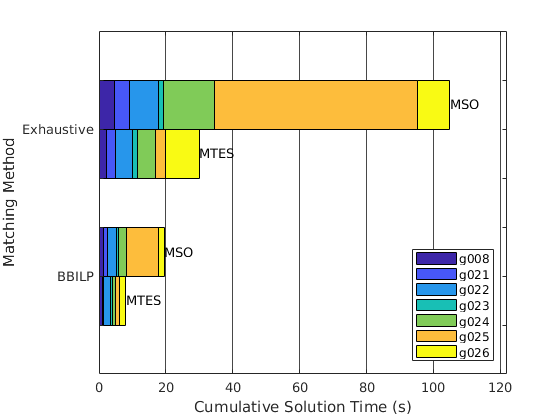

Branch-and-Bound ILP Matching Calculation Cost¶
A novel feature of this toolbox is a methodology to extract valid matchings from Structural Graphs of systems, based on Branch-and-Bound Integer Linear Programming (ILP) principles.
Traditionally, in order to extract valid matchings from a Structural Graph, one would first gather all Properly Structurally Overdetermined subgraphs. Then, he would enumerate all matchings and then examine them one after the other, until he discovered a matching whose corresponding implementation was valid; that is, causal and numerically implementable.
Our BBILP approach is different: In an ILP context, we seek the solution of the problem as the value of a binary decision vector, representing the matched graph edges. Since the problem is combinatorial, we use the Branch-and-Bound algorithm to parse the search space.
A new concept we introduce is that the constraints which refer to the validity of a matching can be encoded directly in the B&B algorithm and checked in the structural domain. These constraints can be quite diverse and reflect causality, calculability and take into account loops of algebraic and dynamic equation systems.
However, the most significant advantage of the B&B approach is that, starting from an initial matching, all edges which violate the validity of that matching form a branching set, which can divide the search space into multiple sections. By following this search tree (either with DFS, BFS or other strategy) one can reach the optimal (i.e. cheapest) valid matching in usually less time than what is achievable through exhaustive enumeration of all the possible matchings.
While this BBILP approach has the same worst-case complexity with exhaustive enumeration, this is rarely the case, as we will see further on.
This demonstration uses the demo script BBILP_demo, which:
- Sets up a set of benchmark models, taken from the literature
- Searches for valid residual generators for each one, using either BBILP or Exhaustive search
- Also uses either Minimal Test Equation Support (MTES) or Minimal Structurally Overdetermined sets (MSO) as a subsystem basis
- Plots the results regarding the required calculation times
Running the Test Script¶
Simply execute the BBILP_demo.m script, located in the Demos folder. It will take about 3 minutes to finish, depending on your machine.
Before discussing the results, let’s go over some key areas of the script:
% Select the models to test
modelArray{end+1} = g008();
modelArray{end+1} = g021();
modelArray{end+1} = g022();
modelArray{end+1} = g023();
modelArray{end+1} = g024();
modelArray{end+1} = g025();
modelArray{end+1} = g026();
The modelArray cell holds the system models to be examined for residual generators. Each one comes from a relevant publication in the literature. For more information for each one, open the corresponding model function and look up the reference to the corresponding publication.
% Define the matching method set to test
matchMethodSet = {'BBILP', 'Exhaustive'};
% Define the Structurally Overdetermined set of graphs to examine
SOTypeSet = {'MTES', 'MSO'};
% The brnach selection strategy for BBILP will be Depth-First Search
branchMethod = 'DFS';
The settings for the benchmark test are set up: Two different matchhing methods are specified for examination, and two different PSO types are defined for use. In total, each system model will be executed 4 times, to acquire data for all combinations. The branching method, which refers to the BBILP algorithm, is set to Depth-First Search, but does not significanlty affect the results.
%% Perform Structural Analsysis and Matching, extract residual generators
SA_results = structural_analysis(model, SA_settings);
This is the core functionality of the script, which performs the structural analysis on each provided model, with the various analysis options.
The structural analysis results for each case-study are lumped and save in a .mat file, available for future processing. In this case the files BBILP_DFS_MSO.mat, BBILP_DFS_MTES.mat, Exhaustive_DFS_MSO.mat and ``Exhaustive_DFS_MTES.mat``s are created.
Calculation Cost Results¶
This is the visual report of the results, automatically generated by the script.
Some models are more complex while others are simpler, resulting in varying parsing times. To get a feeling of the general algorithm performances, we have stacked all models together.
Each matching method was applied both on MSO and MTES subgraphs. It is clearly evident that basing the residual generation scheme on MTESs is favourable, in terms of time complexity.
On the main topic, it is also clear that BBILP solves the residual generation problem much faster than exhausive search. Keep in mind that these benchmark models are quite small, with some tens of equations at maximum. In larger, more realistic systems with hundreds of equations the time savings are much more than a few seconds.